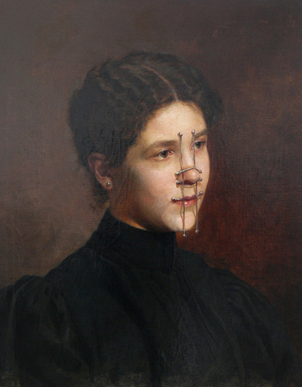

 [*] Markus Schinwald opens an exhibition in the main space on Friday, September 14 at 7pm.
 /\/\/ We are showing two films from 1981 by Joan Jonas Next Door next Thursday at 6pm.
/\/\/ We are showing two films from 1981 by Joan Jonas Next Door next Thursday at 6pm.
(()) On Tuesday, September 21, CCA students in the curatorial program present three brief talks.
:o In two weeks, we will be hosting a guided tour (with lunch) of the Markus Schinwald show. Details to come.
### On October 1, Nairy Baghramian will lead a walking tour of the house at 202 de Haro (20th Street). It starts at noon.
% ) And, on Friday, October 21, we will be having drinks Next Door. Come by starting at 9pm.
That’s all. Would you like to see more events? GO HOME. 20142615